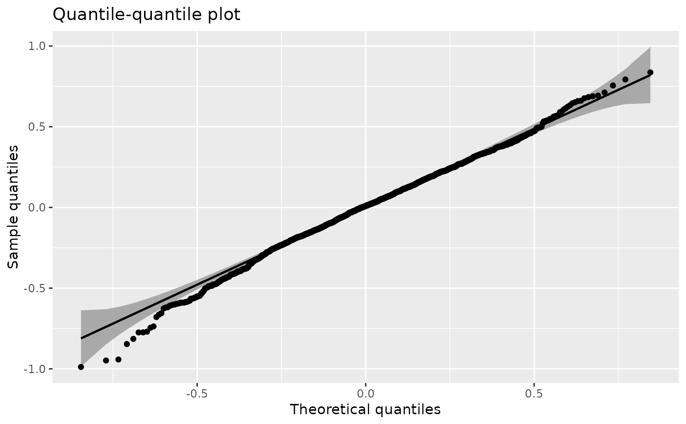

Plot the quantile-quantile (Q-Q) plot for the fitted lcModel object. This function is based on the qqplotr package.
# S4 method for lcModel
qqPlot(object, byCluster = FALSE, ...)The lcModel object.
Whether to plot the Q-Q line per cluster
Additional arguments passed to qqplotr::geom_qq_band(), qqplotr::stat_qq_line(), and qqplotr::stat_qq_point().
A ggplot object.
data(latrendData)
model <- latrend(lcMethodLcmmGMM(fixed = Y ~ Time, mixture = ~ Time,
id = "Id", time = "Time"), data = latrendData)
#> Be patient, hlme is running ...
#> The program took 0.37 seconds
qqPlot(model)
#> Loading required namespace: qqplotr
